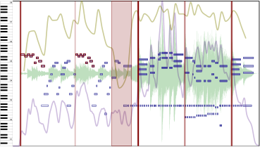
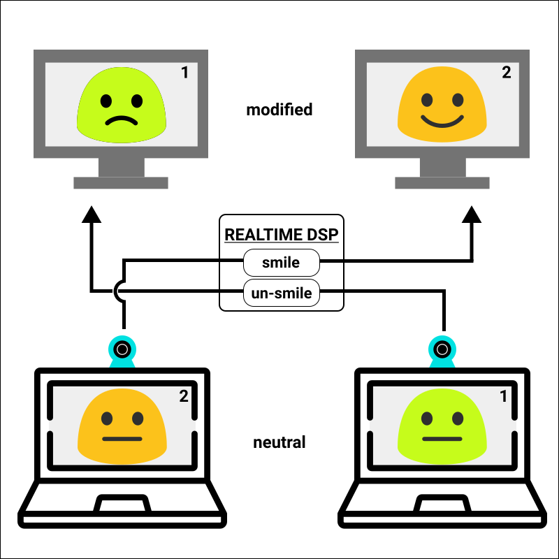
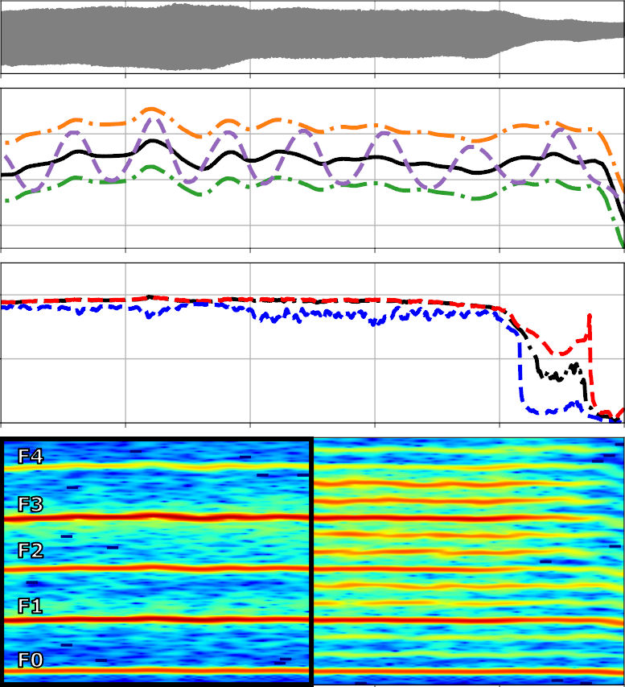
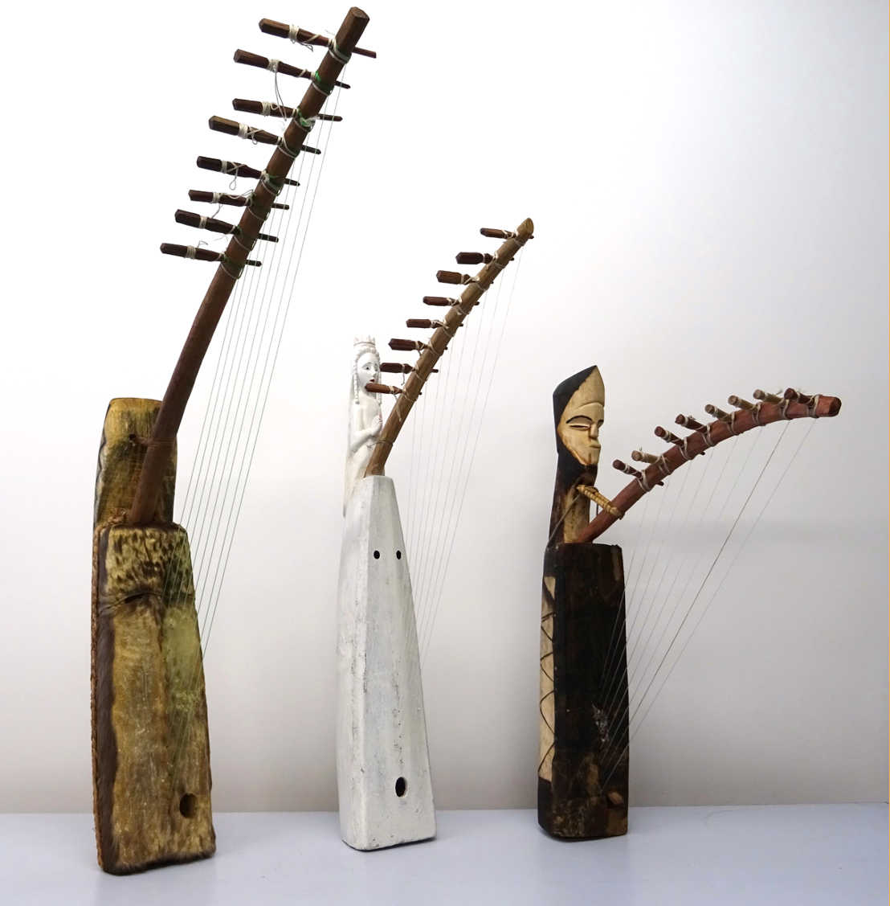

Research Highlights
Annotations through the CosmoNote platform

CosmoNote is a web-based, highly customizable annotation platform created in the context of the COSMOS ERC project to engage in a large-scale collection of annotations and explorations of performed music, by applying the principles of citizen science to obtain high-quality annotation data for music expressivity.
The annotation platform rests on four main pillars: its representations and visualizations (how annotators first encounter the music), its annotation types (the core communication channel connecting annotators and researchers), its intuitiveness (taking inspiration from familiar controls and interface), and its interactivity (e.g., zooming, selecting, editing, filtering).
By analyzing the annotations collected with CosmoNote, we aimed to model and analyze performance decisions in order to aid in the understanding of expressive choices in musical performances and discover the vocabulary of performed musical structures.
Facial and linguistic emotional feedback

The ANR project REFLETS studies the cognitive mechanisms involved in audiovisual feedback taking place on interactions with a mirror (where a subject hears and sees himself smiling) or with someone else (where the interlocutor can hear and see the first party smiling). We were working with real-time algorithms capable to learn a subject's facial features and vocal properties in order to transform the image and the sound on the output, notably in the form of a smile or a frown. This can be applied to an interactive paradigm in which dyads of participants have conversations with one another, while their voice and face is digitally modified to be more smiling, and test the effect that these cues have on various outcomes of the conversation. The main programming environments used for this task are Python and Max MSP.
Emotional vocal cues applied to music

This project explored whether musical emotions are perceived using the same acoustical cues as in speech. While this relationship has been thoroughly studied, there did not exist an experimental setup to manipulate music and speech equally. First, based on distinct signal processing algorithms (DAVID, ZIGGY, ANGUS), we selected and applied the following modifications on three perceptual dimensions: pitch (upwards, downwards and vibrato), spectral envelope (upwards and downwards) and roughness (amplitude modulation with generated subharmonics). We transformed 12 scream samples, the main vocals of 14 stem files, 14 recorded instrumental melodies and 14 recorded sentences. The stimuli were arranged into musical (melodies with and without musical background) and non-musical (speech, screams) conditions. Sixty-six participants listened to pairs of opposite transformations, and evaluated their perceived valence and arousal. The results validate the previous work done by the team concerning emotional speech and they indicate a link between acoustical properties and emotional perception in music. The effects were statistically significant throughout every acoustical transformation, even when applied to instrumental music.
Acoustics of central African harps

As a part of the multidisciplinary project 'Kundi', we determined the acoustical properties of three harps of different Gabon ethnicities. Our main objective was to find descriptors which would allow the better understanding of their vibrational behavior, taking into account that researchers are often unable to study these type of instruments in playing conditions. This work explored three perspectives on the issue: First, an experimental modal analysis using the Least-Squares Complex Frequency-domain (LSCF) estimator and transfer function smoothing algorithms. Second, the analysis of the acceleration signals frequency responses. Third, a mobility measurement for all the strings of each harp. As a result of this approach, we found not only differences in the mean mobility and modal frequencies between harps with similar physical dimensions, but also an apparent non-linear behavior that suggests the harps mobility is influenced by the unconventional materials and techniques employed by the instrument maker.